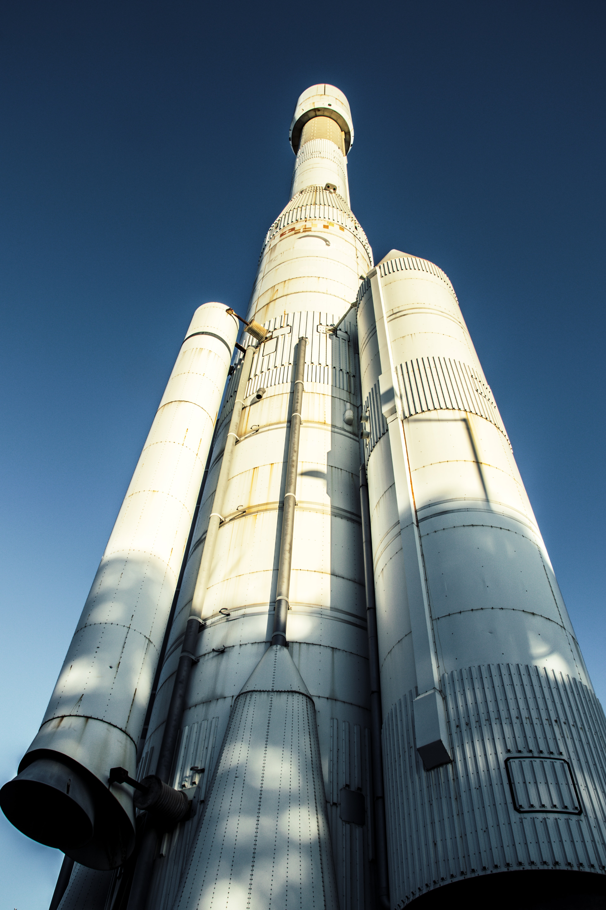

Space Exploration Technologies Corporation — американське приватне підприємство, яке працює в галузі будівництва космічного транспорту, виробник ракет-носіїв сімейства Falcon та космічних кораблів Dragon. Штаб квартира розташована у Готорні, Каліфорнія. Компанія створена інженером і винахідником Ілоном Маском.
Американська компанія SpaceX планує за допомогою ракети Falcon 9 вивести на навколоземну орбіту 12 партію міні-с путників для поповнення орбітального угрупування глобальної мережі інтернет-покриття системи Starlink.